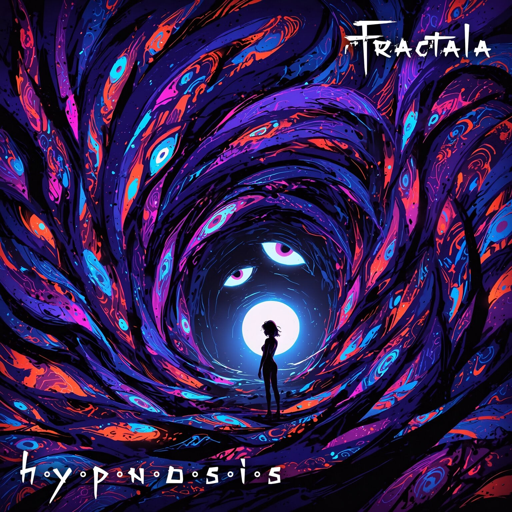

Fractala/Hypnosis

Hello stranger, and welcome to the Fractala.
You have been invited to the Experience.
As a first step, you must venture through the Hypnosis.
The Portal will lead you to the unknown, whether you like it or not, whether you’re ready or
not.
The Self will emerge, and it will either pledge allegiance or oppose.
Enjoy the Journey
Music by Luca Mancini
Additional sound design by Georgi Zhelyazkov
Mix and master by Georgi Zhelyazkov/Sinister Soundworks
Visual experience by Luca Mancini